먼저 보기: Target/Draft 두 줄 PDF (5쪽) · 모델별 두 줄 그림 모음
준비/변환/merge를 구분한 상세본: 기존 renderer PDF (14쪽) · 그림 모음
18번 서버에서 최종 선택한 ver1.0 실측 설정을 ver1.1 작업 트리에서 재분석했습니다. 새 모델 실행이나 ver1.1 성능 측정이 아닙니다. 각 설정은 profile용 4턴·출력 상한256이며, full dataset/전역 최적값으로 해석하지 않습니다.
읽는 순서: 모델별 PDF → component 분포 → cache 상태별 비교 → 대표 step의 원시 시간축. 파란색·초록색 DS/PS와 target을 같은 시간축에서 확인합니다. Timeline의 색 막대는 CUDA-event elapsed, 검은 선은 CPU dispatch이며, 부모·자식 구간은 더하면 안 됩니다. CPU/GPU event 구간이 GPU busy time 자체를 뜻하지 않습니다.
Warmup·요청별 첫2단계·마지막 단계 제외. 긴 step 임의 제거 없음. 서로 다른 요청의 step ID를 섞지 않았고 draft 시계를 인위적으로 이동하지 않았습니다. DS arrival은 추정이며 ±1ms 차이는 clock 불확실성에 유의합니다. Code34B 12/6은 유효 miss 표본0개, 16/6은2개뿐입니다.
전체 상세 PDF · 수치/근거 JSON · 설명 문서
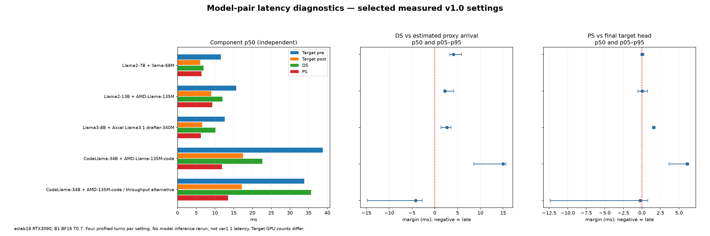
l2_7b_final_profile | n=321 | Detailed PDF · Exact parameters · Component CSV · All labels / CPU & GPU CSV · Every measured event CSV
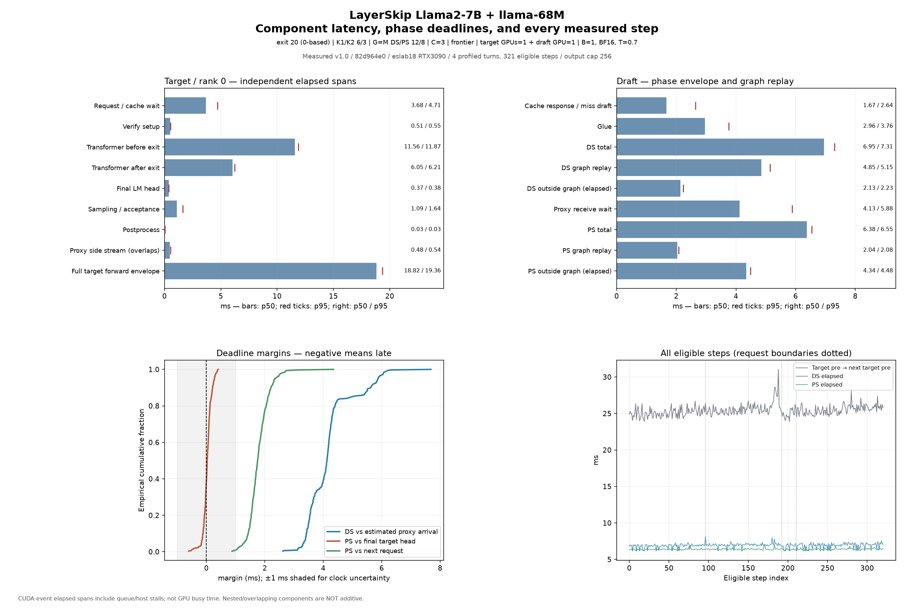
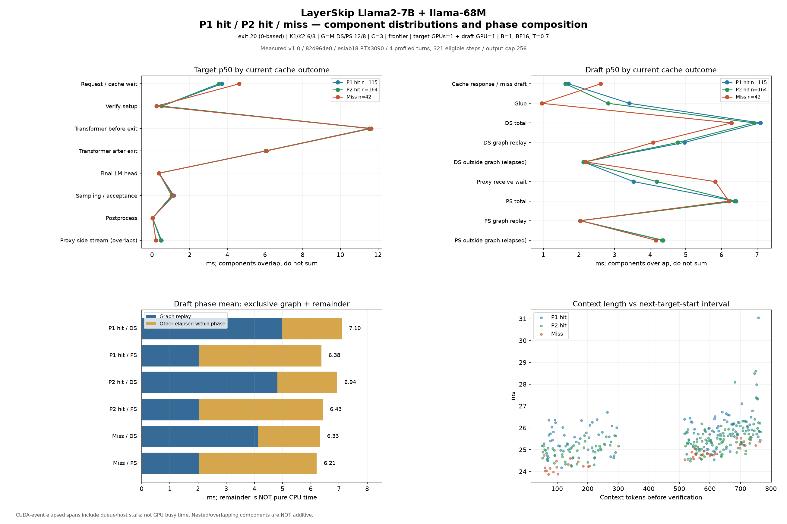
P1 hit p25 (req1/step25) P1 hit p50 (req2/step78) P1 hit p75 (req2/step61) P2 hit p25 (req1/step3) P2 hit p50 (req1/step96) P2 hit p75 (req4/step9) Miss p25 (req1/step16) Miss p50 (req4/step84) Miss p75 (req4/step38)
l2_13b_deadline_profile_e23_k6_3 | n=444 | Detailed PDF · Exact parameters · Component CSV · All labels / CPU & GPU CSV · Every measured event CSV
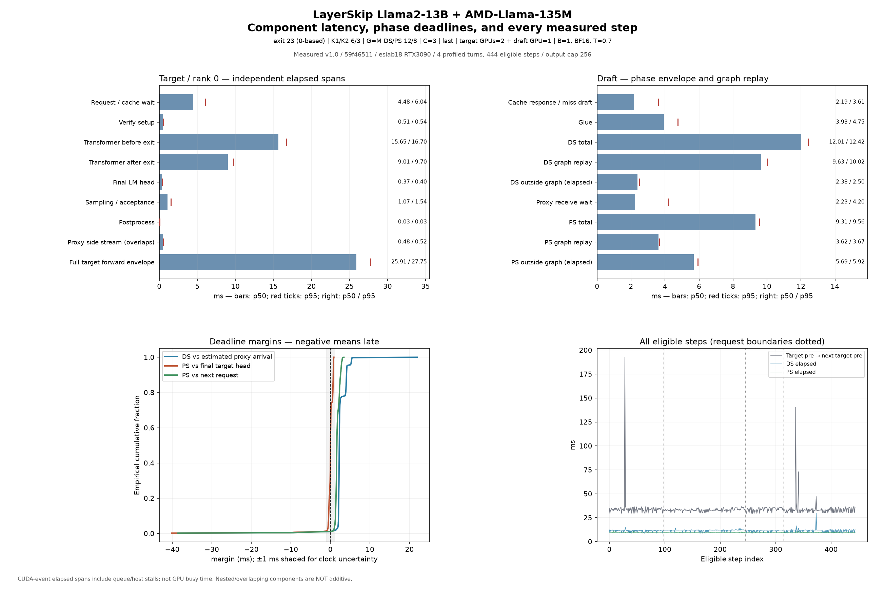
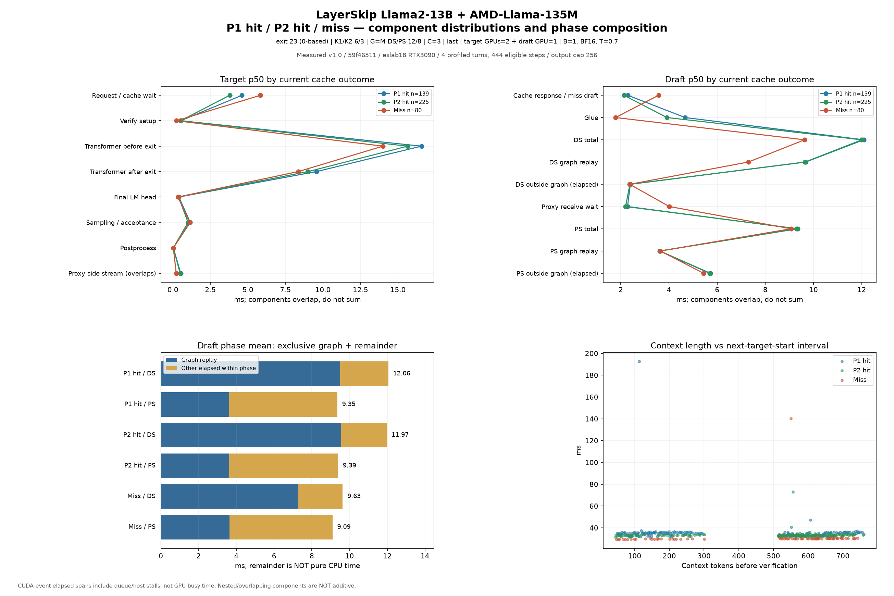
P1 hit p25 (req4/step20) P1 hit p50 (req1/step68) P1 hit p75 (req3/step64) P2 hit p25 (req2/step109) P2 hit p50 (req4/step127) P2 hit p75 (req1/step55) Miss p25 (req4/step93) Miss p50 (req3/step29) Miss p75 (req2/step108)
l3_8b_final_profile | n=387 | Detailed PDF · Exact parameters · Component CSV · All labels / CPU & GPU CSV · Every measured event CSV
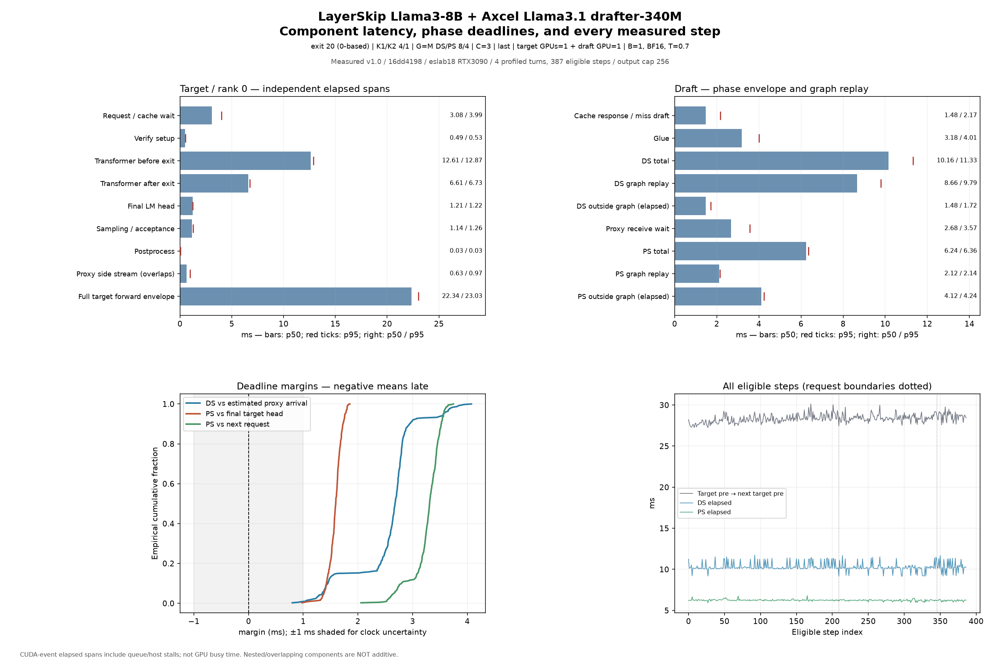
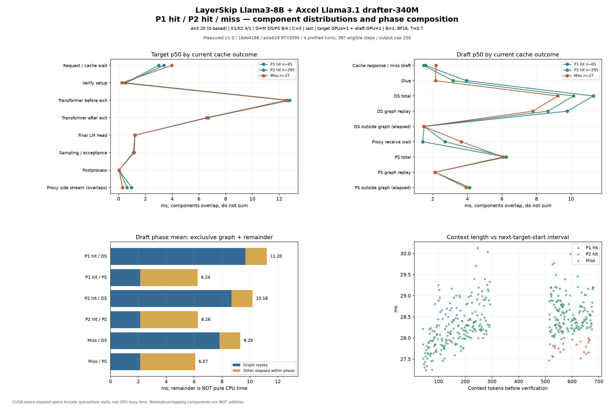
P1 hit p25 (req1/step113) P1 hit p50 (req1/step170) P1 hit p75 (req2/step48) P2 hit p25 (req1/step23) P2 hit p50 (req2/step92) P2 hit p75 (req2/step101) Miss p25 (req4/step26) Miss p50 (req2/step65) Miss p75 (req4/step15)
code34b_deadline_profile_e30_k12_6 | n=73 | Detailed PDF · Exact parameters · Component CSV · All labels / CPU & GPU CSV · Every measured event CSV
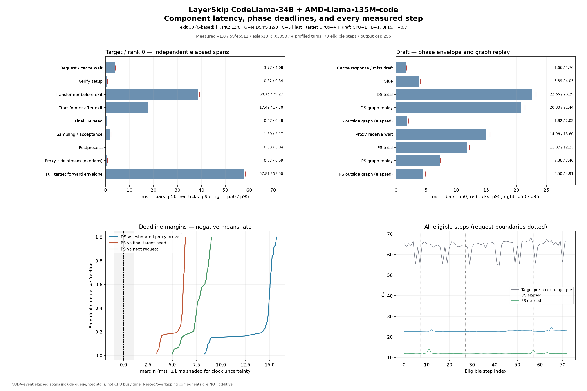
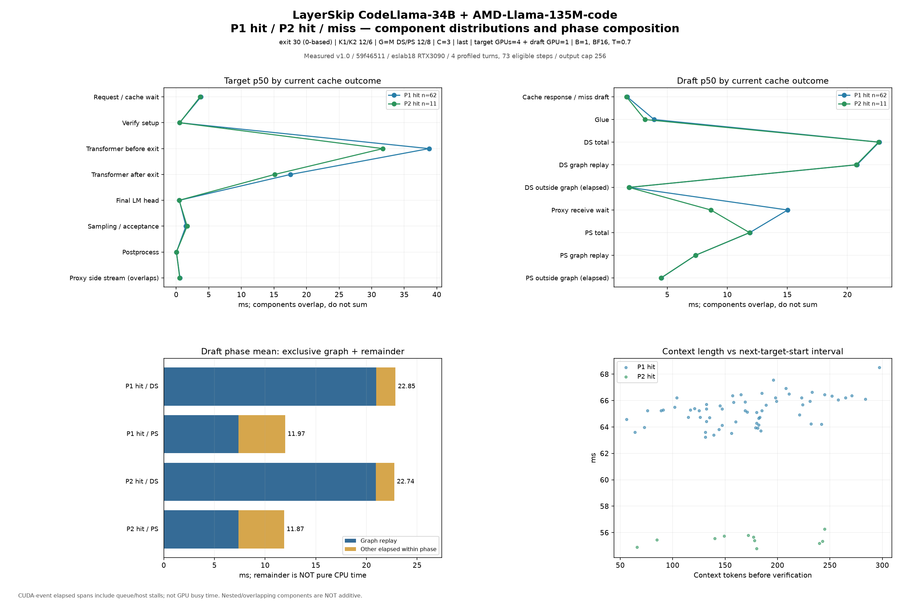
P1 hit p25 (req4/step6) P1 hit p50 (req4/step7) P1 hit p75 (req4/step15) P2 hit p25 (req2/step3) P2 hit p50 (req3/step25) P2 hit p75 (req1/step8)
code34b_final_profile | n=84 | Detailed PDF · Exact parameters · Component CSV · All labels / CPU & GPU CSV · Every measured event CSV
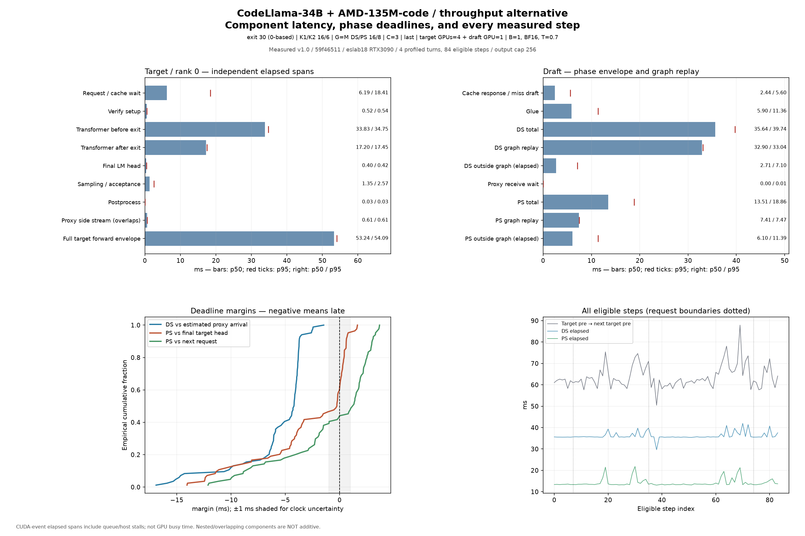
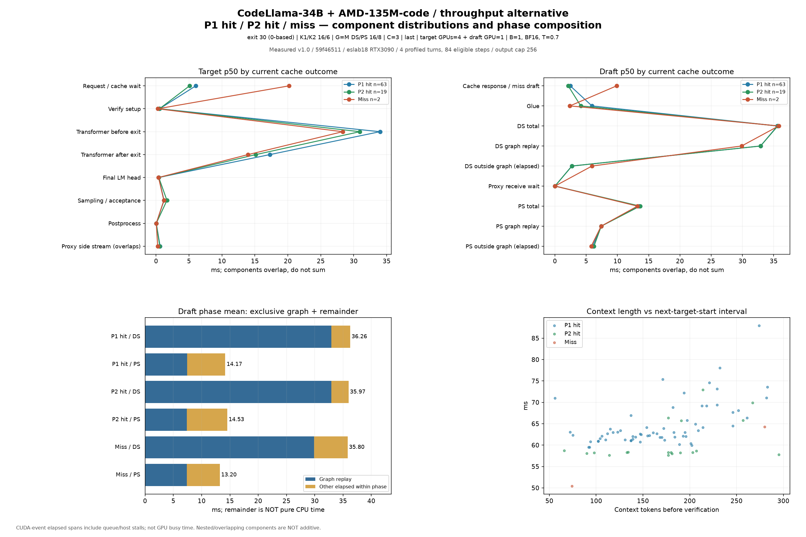
P1 hit p25 (req3/step26) P1 hit p50 (req2/step30) P1 hit p75 (req2/step13) P2 hit p25 (req3/step12) P2 hit p50 (req4/step11) P2 hit p75 (req3/step4) Miss p25 (req3/step6) Miss p75 (req3/step38)